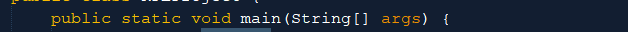

Tutorial Dasar Java
Perkenalan Java
Apa itu Java ?
Java adalah bahasa pemrograman yang populer, dibuat pada tahun 1995.
Ini dimiliki oleh Oracle, dan lebih dari 3 miliar perangkat menjalankan Java.
Ini digunakan untuk:
- Aplikasi seluler (khususnya aplikasi Android)
- Aplikasi desktop
- Aplikasi web
- Server web dan server aplikasi
- permainan
- Koneksi basis data
- Dan masih banyak lagi!
Kenapa Harus Menggunakan Java ?
- Java berfungsi pada berbagai platform (Windows, Mac, Linux, Raspberry Pi, dll.)
- Ini adalah salah satu bahasa pemrograman paling populer di dunia
- Mudah dipelajari dan mudah digunakan
- Ini open-source dan gratis
- Aman, cepat, dan kuat
- Ini memiliki dukungan komunitas yang sangat besar (puluhan juta pengembang)
- Java adalah bahasa berorientasi objek yang memberikan struktur yang jelas untuk program dan memungkinkan kode untuk digunakan kembali, sehingga menurunkan biaya pengembangan
- Karena Java dekat dengan C ++ dan C #, itu memudahkan programmer untuk beralih ke Java atau sebaliknya
Persiapan Sebelum Memulai
Sebelum memulai tutorial, pastikan anda sudah menginstal aplikasi IDE Java. Disini kami merekomendasikan untuk memakai aplikasi Netbeans karena fiturnya yang lengkap.
Selain Netbeans, ada banyak software IDE Java seperti Eclipse, IntelliJ IDEA, dll. Itu semua bagaimana Anda untuk memakai software mana yang terbaik untuk Anda.
Java Syntax

Penjelasan Kode Diatas
Baris kode yang berjalan di Java harus berada di dalam kelas. Dalam contoh kita, kita menamakan kelas MyClass. Kelas harus selalu dimulai dengan huruf besar pertama.
Catatan: Java peka huruf besar-kecil: "MyClass" dan "myclass" memiliki arti berbeda.
Nama file java harus cocok dengan nama kelas. Saat menyimpan file, simpan menggunakan nama kelas dan tambahkan ".java" ke akhir nama file. Untuk menjalankan contoh di atas di komputer Anda, pastikan Java diinstal dengan benar
The Main Method
Metode main () diperlukan dan Anda akan melihatnya di setiap program Java:
Kode apa pun di dalam metode main () akan dieksekusi. Anda tidak harus mengerti kata kunci sebelum dan sesudah main. Anda akan mengenal mereka sedikit demi sedikit saat membaca tutorial ini.
Untuk saat ini, ingatlah bahwa setiap program Java memiliki nama kelas yang harus cocok dengan nama file, dan bahwa setiap program harus berisi metode main ().
System.out.println()
Di dalam metode main (), kita bisa menggunakan metode println () untuk mencetak satu baris teks ke layar:
Java Comments
Java Comments
Komentar dapat digunakan untuk menjelaskan kode Java, dan membuatnya lebih mudah dibaca. Itu juga dapat digunakan untuk mencegah eksekusi ketika menguji kode alternatif.
Komentar baris tunggal dimulai dengan dua garis miring (//).
Teks apa pun antara // dan akhir baris diabaikan oleh Java (tidak akan dieksekusi).
Contoh ini menggunakan komentar satu baris sebelum satu baris kode:
Java Multi-line Comments
Komentar multi-baris dimulai dengan / * dan diakhiri dengan * /.
Teks apa pun antara / * dan * / akan diabaikan oleh Java.
Contoh ini menggunakan komentar multi-baris (blok komentar) untuk menjelaskan kode:
Daftar Pustaka
w3schools, “Java Intro,” www.w3schools.com, 2020. [Online]. Available: https://www.w3schools.com/java/java_intro.asp.
w3schools, “Java Syntax,” www.w3schools.com, 2020. [Online]. Available: https://www.w3schools.com/java/java_syntax.asp.
w3schools, “Java Comments,” www.w3schools.com, 2020. [Online]. Available: https://www.w3schools.com/java/java_comments.asp.